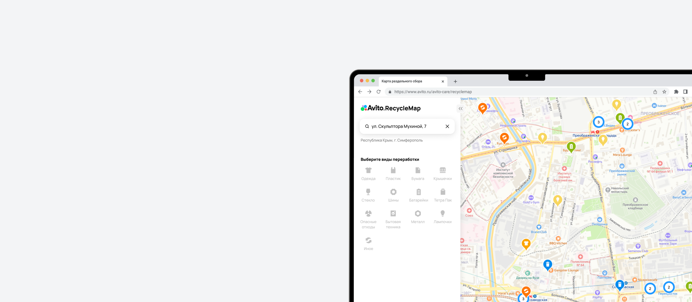
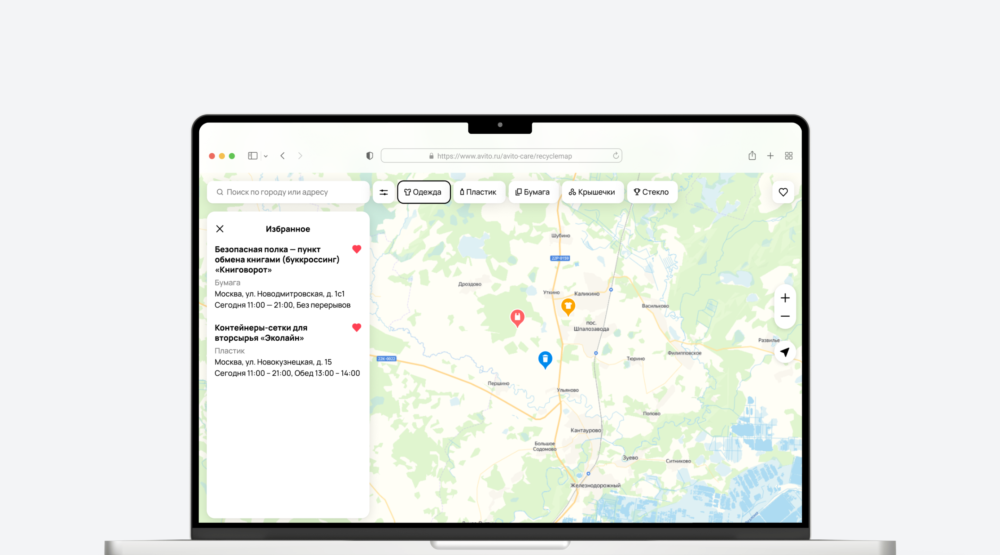
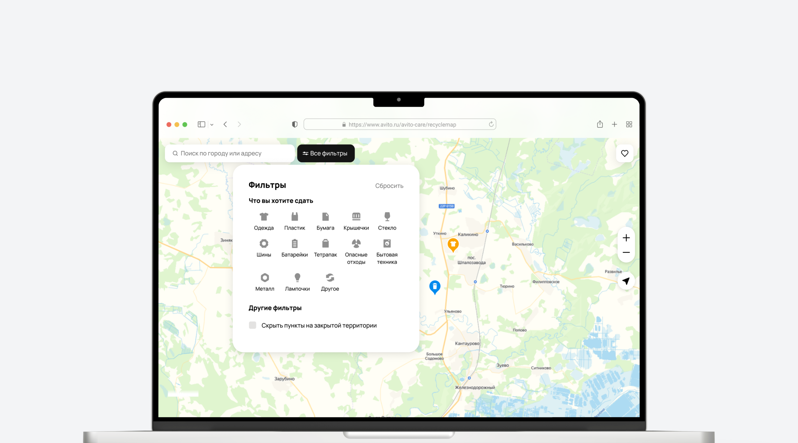
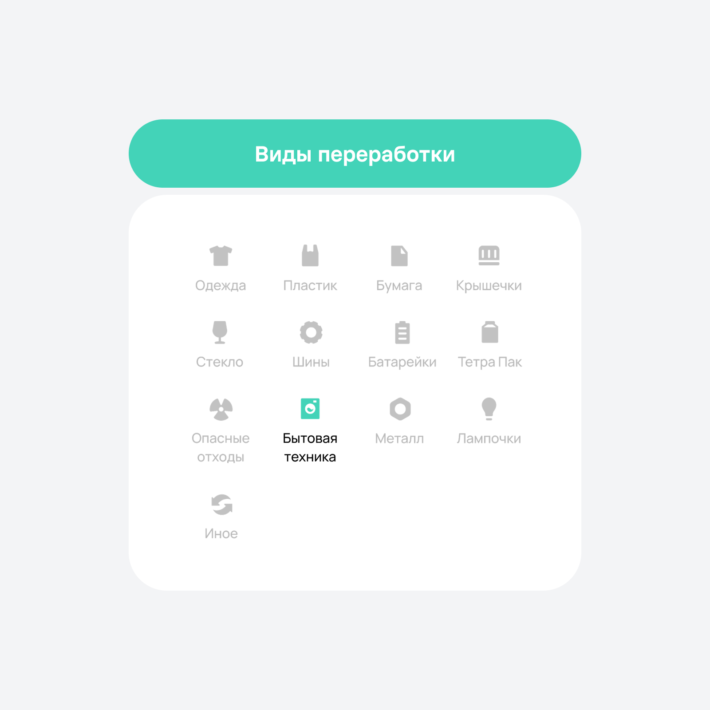
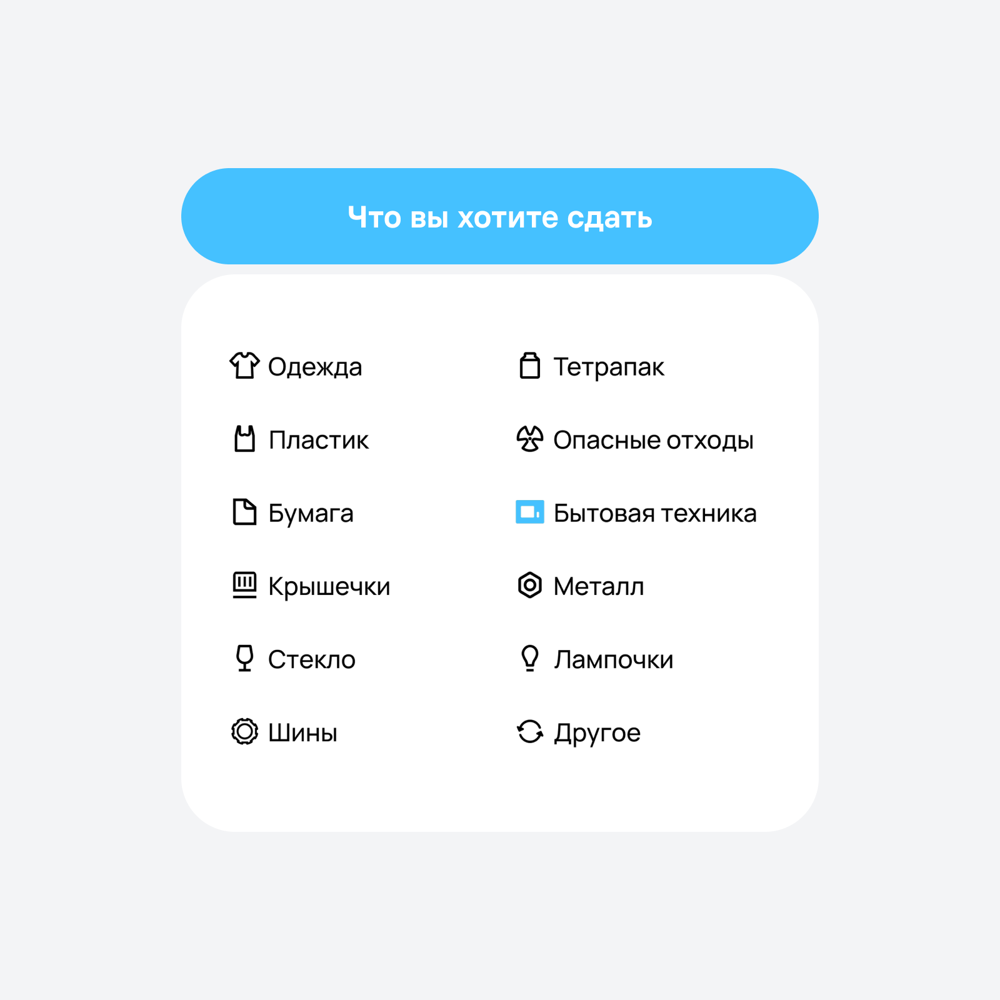
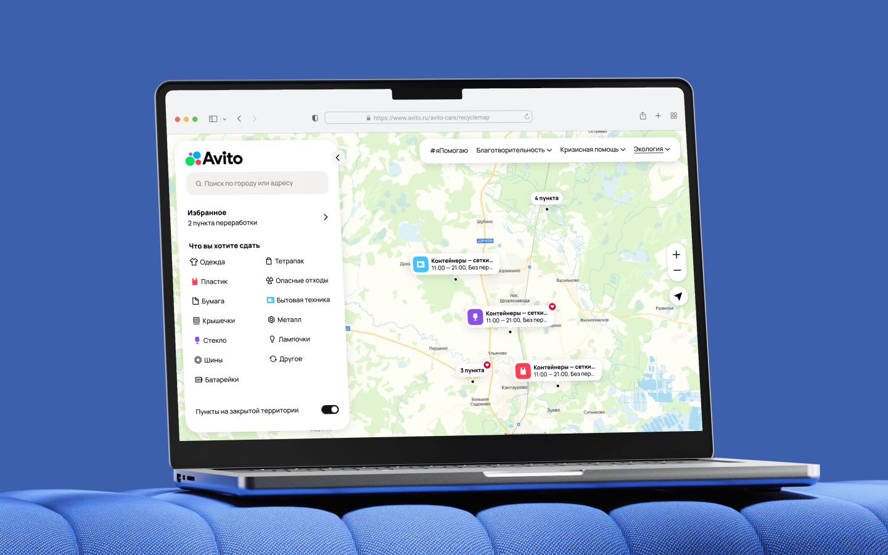
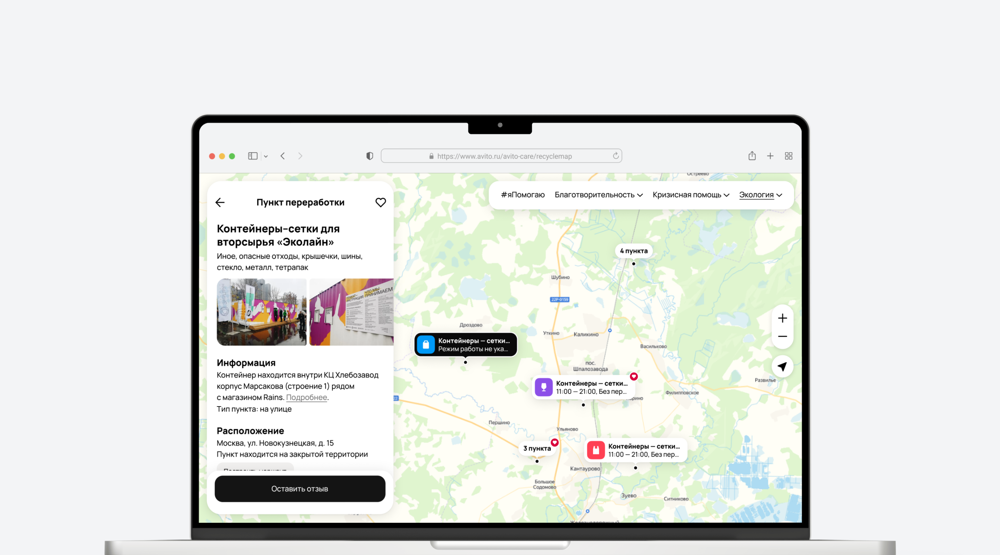
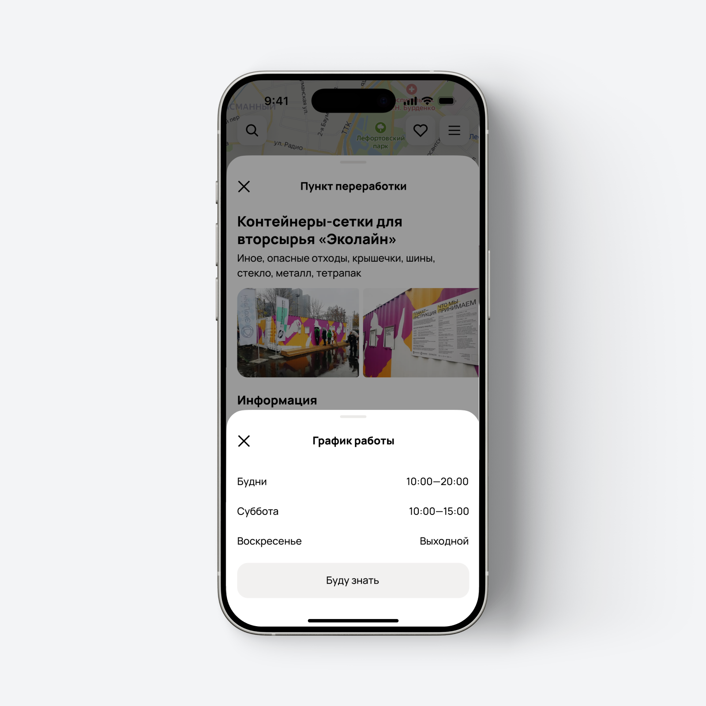
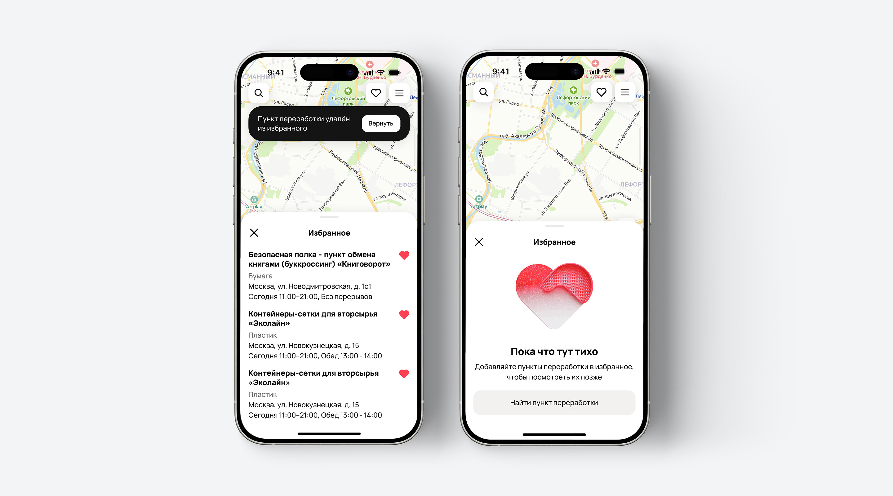

Карта переработки вещей
Проблема: человек находил пункт приёма и уходил. Фильтры выглядели неактивными, сохранить точку было нельзя, а вернуться к другим инициативам было неоткуда.
Решение: пересобрала поиск, фильтры и карточку пункта, добавила избранное и общую навигацию благотворительности

О проекте
Карта помогает найти, куда сдать вторсырьё и вещи на благотворительность, а точки на ней поставляют партнёрские организации
Продакт поставил задачу перестать терять на карте человека. Успехом считали возвраты на карту и переходы в другие инициативы благотворительности, но замерить получилось только возвраты
Тысячи адресов с разным качеством описаний, править описания на нашей стороне нельзя, улучшать можно было только интерфейс

Проблемы
Сценарий рвался в трёх местах
Карта не была связана с остальной благотворительностью: переходов в другие инициативы — единицы в день
Фильтры в изначальном виде выглядели как неактивные и люди писали в поддержку, что фильтры недоступны, хотя кликабельны
Сохранить найденный пункт было нельзя. Между визитами проходят недели, и человек искал заново
Концепты
Сравнила две компоновки. Выбрала показывать все фильтры сразу: фильтр по типу отходов нужен почти каждому, и лишний клик бил бы по основному сценарию. Заодно проверила, как компоненты дизайн-системы ведут себя в разных вариантах.


Поиск и фильтры
Иконки фильтров серые и выглядят неактивными. Люди писали в поддержку, что фильтры недоступны.


Привела категории и пины к дизайн-системе Авито: категорийных пинов и фильтра с множественным выбором в ней не было, их пришлось спроектировать и внести в систему.

Карточка пункта и избранное
Адрес, условия приёма, режим работы и контакты лежали в карточке одним весом — понять, подходит ли пункт, было долго. Сохранить его было нельзя.

Перегруппировала карточку по задачам: где это, что примут, когда открыто, как связаться.
Унифицировала типографику, ссылки и состояния. Спроектировала сохранение пункта и список избранного.
Развернула режим работы в подробный график — из-за неточного времени чаще всего ездят зря.

Почему избранное отдельным списком
Рассматривала флаг «сохранено» внутри карточки: дешевле и не добавляет новой сущности. Выбрала отдельный список.

Флаг помечает пункт, но не помогает к нему вернуться: человек, который сдаёт вещи раз в месяц, не помнит, где эта точка на карте. Ему нужен не признак, а место, куда можно прийти. Список стоил дороже, но без него сценарий возврата не закрывался.
Проверить этот выбор можно только данными — он первый в плане замеров.
Результаты
Раскатывали на всех сразу, без А/Б-теста, поэтому приписывать редизайну весь трафик карты я не могу. По данным:
306K
Загрузок точек в день
1,5–3K
Открытий карточки пункта в день
До 70
Сохранений точек в избранное в день
Эти числа говорят, что картой пользуются регулярно, а не разово. Что это следствие именно редизайна — не говорят: для такого вывода нужен замер, которого у нас не было.
Что проверяю дальше
Сколько времени уходит на поиск подходящего пункта. Если долго даже с фильтрами, то это узкое место не в интерфейсе, а в качестве партнёрских данных, и работать надо с ними, а не с экраном.
Как часто открывают сохранённые точки. Если реже раза в месяц, то избранное работает как закладка «на всякий случай», и тогда логичнее напоминание, а не список.
Какие фильтры чаще приводят к открытию карточки и построению маршрута. Редко используемые фильтры будут кандидатами на удаление: короткий список фильтров обычно работает лучше полного.